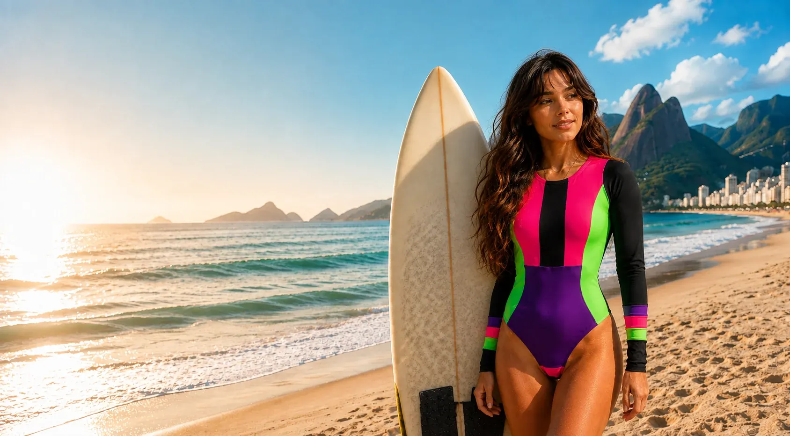

Moda praia
Biquínis, tops de biquíni, maiôs e sunquínis em cores e estampas exclusivas, para praia e piscina.
Ver moda praia
Fabricação própria em Araruama, RJ
Cada peça é pensada para o movimento do corpo que vai usá-la — na areia, no mar ou no treino.
Controle total sobre corte, costura e acabamento, do início ao fim.
Estoque limitado — cada corte é feito em pequenas quantidades.
Costura reforçada, feita para durar muitas lavagens e muito uso.
Lycra técnica selecionada para praia, mar e treino de alta intensidade.
Cada peça é cortada e costurada pela própria Turkista, na Região dos Lagos (RJ), em pequenas quantidades. Os pedidos seguem pelos Correios para todo o Brasil.
Biquínis, tops de biquíni, maiôs e sunquínis em cores e estampas exclusivas, para praia e piscina.
Ver moda praiaMaiôs de surf e croppeds de surf para uso no mar e na prática do esporte.
Ver linha surfConjuntos, tops, leggings e calças da linha Turk Fit, para corrida, academia e treinos de alto impacto.
Ver Turk FitA Turkista nasceu em família. Entre máquinas, tecidos e o cheiro de linha nova, aprendi que costurar é mais do que técnica — é cuidado. Hoje, cada peça carrega essa história: fabricação própria, escolha certa de tecidos e acabamento feito para durar.
Conhecer nossa história


Hoje a venda é 100% pelo WhatsApp. Escolha a peça no catálogo do site e clique em “Perguntar no WhatsApp”: tamanho, cor disponível, valor e prazo de entrega são confirmados na conversa.
Sim. Os pedidos saem de Araruama (RJ) pelos Correios, com despacho em 1 a 3 dias úteis após a confirmação do pagamento. Frete grátis acima de R$ 100 para Sul e Sudeste.
Troca ou devolução em até 7 dias corridos após o recebimento. Biquínis e maiôs são aceitos somente em caso de defeito de fabricação, lacrados e sem sinais de uso.
Não. A Turkista é uma loja online, com fabricação própria em Araruama (RJ), e envia para todo o Brasil.
Não. A Turkista trabalha com disponibilidade limitada, em pequenas quantidades. Quando uma peça esgota, ela não é reposta em série.
A Turkista conserta. Se a costura de uma peça soltar com o uso normal, chame no WhatsApp para avaliar o reparo.